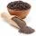

Lista de Ingredientes:
- 1 massa de lasanha (pronta)
- 500 g de queijo mussarela
- 1 massa de tomate pronta
-  pimenta-do-reino a gosto
- 500 g de presunto
 500 g carne moída
500 g carne moída sal a gosto
sal a gosto- orégano a gosto
A lasanha tradicional é um prato clássico da culinária italiana que conquista paladares com suas camadas de massa intercaladas com molho de carne, queijo, presunto e molho de tomate. Essa receita é um verdadeiro deleite para quem aprecia uma refeição cheia de sabor. Os ingredientes incluem massa de lasanha pronta, carne moída, mussarela, presunto, molho de tomate, sal, pimenta e orégano. A lasanha tradicional é uma opção maravilhosa para uma reunião em família ou um jantar especial. É um prato versátil que agrada a todos os gostos e que certamente deixará todos com água na boca. Prepare essa lasanha e encante seus convidados com uma refeição clássica e irresistível que celebra a tradição e o sabor da culinária italiana.
500 g carne moídasal a gosto